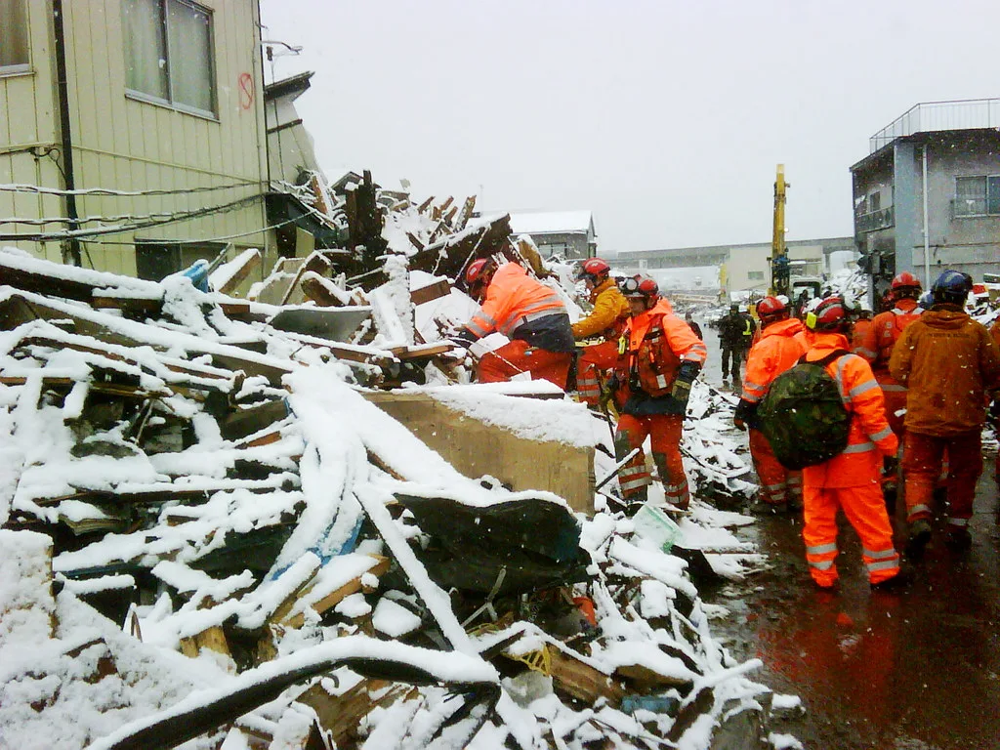

구마모토 지진 사망자 13명으로 늘어…이온몰 붕괴, 반도체 공장도 피해
다카이치 사나에 일본 총리는 29일 규슈 구마모토현을 강타한 규모 7.1 강진으로 인한 사망자가 13명으로 늘었다고 밝혔다. 앞서 28일 오후 발생한 이번 지진은 일본 기상청 진도 계급 최고 등급인 '진도 7강'을 기록했으며, 야쓰시로시 주택 붕괴와 대형 상업시설 '이온몰 구마모토'의 붕괴·폭발이 겹치며 인명 피해가 눈덩이처럼 불어났다. 다카이치 총리는 여전히 안부가 확인되지 않은 이들이 있다며 밤새 수색을 이어갈 것을 지시했다고 전해졌다.
피해가 가장 컸던 곳은 구마모토현 가시마정에 위치한 이온몰 구마모토였다. 지진 직후 시설 안에 있던 약 200명이 야외 주차장으로 긴급 대피했으나, 뒤이어 폭발이 발생하면서 건물 2층 일부가 무너져 내렸다. 현장에서는 20대 여성 2명의 사망과 다른 여성 1명의 심폐정지가 확인됐고, 5명이 부상을 입은 것으로 집계됐다. 소방당국은 붕괴 잔해 속에서 8명을 구조했으며, 정부 고위 관계자는 지진으로 손상된 가스 설비에서 누출된 가스가 폭발로 이어졌을 가능성을 제기했다.

피해 규모는 계속 확대되고 있다. 29일 오전 8시30분 기준으로 부상자는 31명, 실종자는 7명으로 집계됐으며, 지진 피해와의 관련성을 조사 중인 사례까지 포함하면 사망자 수는 더 늘어날 가능성도 배제할 수 없는 상황이다. 야쓰시로시에서는 주택 붕괴로 2명이 숨진 것이 별도로 확인됐고, 인근 제지공장 근로자 등의 생사도 한때 확인되지 않았던 것으로 전해졌다. 소방당국은 야간에도 조명을 밝히고 구조 인력과 장비를 대거 투입해 매몰자 수색을 이어가고 있다.
산업계 피해도 속속 드러나고 있다. 규슈 지역에는 소니 등 주요 전자·반도체 기업의 생산 시설이 밀집해 있는데, 이번 지진으로 일부 반도체 공장에도 피해가 발생한 것으로 전해졌다. 구마모토는 최근 몇 년 새 일본 정부의 반도체 산업 육성 정책에 힘입어 관련 공장이 잇따라 들어선 지역이어서, 이번 지진이 현지 생산 차질로 이어질지 업계의 관심이 쏠리고 있다. 다만 구체적인 피해 규모와 조업 재개 시점은 아직 명확히 파악되지 않은 것으로 알려졌다.

구마모토현은 2016년에도 규모 7.3의 강진으로 큰 인명·재산 피해를 입은 지역이다. 당시 지진으로 수십 명이 목숨을 잃고 건물 수천 채가 붕괴하거나 파손된 바 있어, 이번 강진 역시 유사한 규모의 피해로 이어질 수 있다는 우려가 나온다. 일본 기상청은 향후 1주일 안팎으로 최대 진도 6약 수준의 여진이 발생할 가능성이 있다며 각별한 주의를 당부했다. 아리아케해와 야쓰시로해 연안에 발령됐던 쓰나미 주의보는 이후 해제됐지만, 일부 철도와 도로 통제는 계속되고 있는 것으로 전해졌다.
일본 정부는 관계 부처 대책반을 꾸리고 피해 상황 파악과 구조 작업에 총력을 기울이고 있다. 다카이치 총리는 실종자 수색을 "시간과의 싸움"이라고 표현하며 가용 인력을 총동원할 것을 지시한 것으로 전해졌다. 대형 상업시설이 밀집한 지역에서 발생한 재해인 만큼 정확한 피해 규모가 확인되기까지는 다소 시일이 걸릴 전망이며, 노후 상업시설의 내진 설계와 가스 안전 관리 체계를 재점검해야 한다는 지적도 함께 제기되고 있다.